UDN
Search public documentation:
SettingUpVehiclesCH
English Translation
日本語訳
한국어
Interested in the Unreal Engine?
Visit the Unreal Technology site.
Looking for jobs and company info?
Check out the Epic games site.
Questions about support via UDN?
Contact the UDN Staff
日本語訳
한국어
Interested in the Unreal Engine?
Visit the Unreal Technology site.
Looking for jobs and company info?
Check out the Epic games site.
Questions about support via UDN?
Contact the UDN Staff
设置载具
载具建模—设置模型及骨架绑定
- 根骨骼必须在载具的主要刚性底盘占有主要权重。
- 载具的+X轴指向下方且+Z轴指向上方，根“底盘”骨骼也使其+X轴指向下方且+Z轴指向上方。在添加任何骨骼前使载具指向正确的方向是一个很好的主意。
- 轮子和悬架的任何其它骨骼应该是底盘骨骼的直接子项。_不要_ 使轮子成为悬架骨骼的子项——让它们成为底盘的子项。
- 将每个轮胎骨骼放置在您希望轮子旋转的地方（包括滚动及操纵方向）。骨骼的一个轴应该指向滚动轴而另一个应指向操纵方向轴（一旦载具被导入，您在设置AnimTree的时候就可以告诉引擎使用哪个轴）。
- 当导出该载具时，确保轮子骨骼被移动到悬挂系统最大伸长范围的位置。
- 任何武器都需要骨骼来进行旋转，不论是进行倾斜还是偏转(可以这两个操作使用同一个骨骼或者分别使用一个骨骼)。对于具有多个乘客座位的载具，每个座位应该有一个骨骼，当乘客占用那个座位时，将会把他附加到那个骨骼上(如果可见)。同时，载具所使用的任何相机和特效(比如枪嘴火焰、产生的射弹、火箭推进器特效、销毁特效等)都需要通过插槽来进行附加。很多情况下，这些特效不需要在插槽所在的精确位置具有骨骼，但是如果在插槽所在的精确位置具有骨骼，那么使得设置插槽的速度更快。
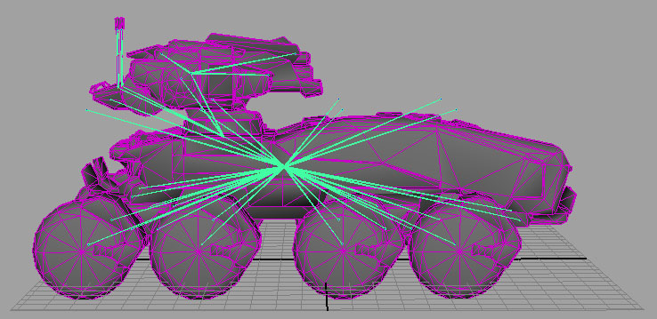
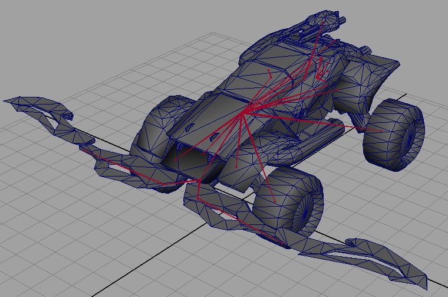
导出载具
导入和设置载具

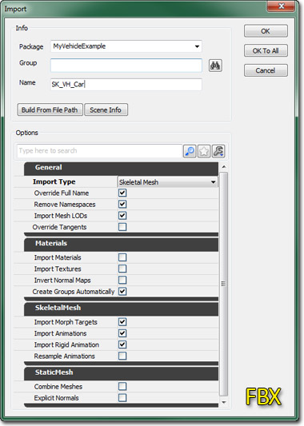
同时也要导入载具的贴图及材质，并设置它们把它们分配给那个静态网格物体。在AnimSet(动画集)编辑器中，您可以通过从File(文件)菜单中选择 New AnimSet(新建动画集)... ，然后提供包、组(可选)及名称，从而为载具创建一个新的动画集，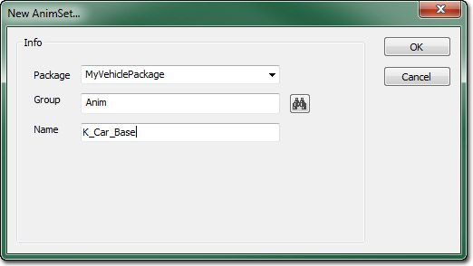
然后，通过再次从动画集编辑器中的 File（文件）菜单中选择 Import PSA(导入PSA)... 来把包含那个载具的所有动画的.PSA文件导入到载具的动画集中。 如果您使用的是 .FBX文件格式，那么这里您应该选择 Import FBX Animation(导入FBX 动画)... 来导入您的动画。
如果载具有任何顶点变形目标，那么这些顶点变形目标也可以通过AnimSet编辑器导入。首先，通过从 File(文件) 菜单选择 New MorphTargetSet(新建顶点变性目标集) 来创建新的MorphTargetSet ，并提供包、组(可选)及它的名称。
如果您使用的是 .FBX文件格式，那么这里您应该选择 Import FBX Animation(导入FBX 动画)... 来导入您的动画。
如果载具有任何顶点变形目标，那么这些顶点变形目标也可以通过AnimSet编辑器导入。首先，通过从 File(文件) 菜单选择 New MorphTargetSet(新建顶点变性目标集) 来创建新的MorphTargetSet ，并提供包、组(可选)及它的名称。
 然后可以通过从 File(文件) 菜单中选择 Import MorphTarget(导入顶点变形目标) 将每个单独的顶点变形目标导入到那个顶点变形目标集中。
然后可以通过从 File(文件) 菜单中选择 Import MorphTarget(导入顶点变形目标) 将每个单独的顶点变形目标导入到那个顶点变形目标集中。
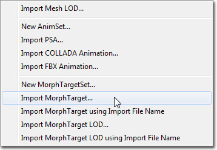
这个选项提供了导入包含顶点变形目标的 .PSK或.FBX文件的功能。创建物理资源
一旦您已经将载具网格物体导入引擎，您需要为其创建一个物理资源，为其定义碰撞形状。为了完成这个工作，您需要使用PhAT(物理资源编辑工具)。 对载具使用的物理资源中唯一重要的刚体就是根“底盘”骨骼。您不需要为任何其它骨骼创建物理刚体——例如您无需为轮子创建关节。轮子模拟全部由载具物理代码操作。只有底盘刚体将被作为一个物理对象来创建，并被用于载具碰撞。PhysicsAssets被用于直线碰撞检测以及玩家对载具的碰撞，因此您可能希望为其它骨骼创建碰撞形状来获得更准确的碰撞——特别是在这些骨骼可能移动的情况下（门，挡板，转动架等）。 游戏中载具质量及惯性是基于底盘碰撞几何体的体积以及应用于底盘BodySetup 的PhysicalMaterial 密度属性进行计算的。要修改游戏中载具的质量，您可以修改PhysicalMaterial，或者调整底盘BodySetup的MassScale属性。创建动画树
尽管您或许没有在您的载具上播放动画，但是您仍然需要为其创建一个AnimTree，以使其正确工作。这是由于AnimTrees也包含在游戏中逐渐移动每块骨骼的SkelControls。UE3载具系统使用一种特殊类型的骨骼控制器来移动轮子骨骼，使其与欲建立的仿真匹配。您可以在Using Skeletal Controllers页面上找到更多关于轮子SkelControls的信息。 请参照动画树编辑器用户指南页面来获得关于动画树设置及使用该编辑器的更多信息。设置轮子
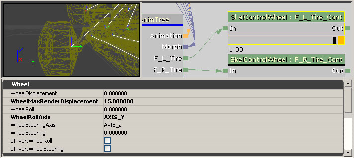
“WheelDisplacement(轮子位移)”，“WheelRoll(轮子滚动)”，与“WheelSteering(轮子转向)”设置是简单可视的，因此您可以在编辑器中看到物体在正确的轴上向正确的方向移动。 它们并不真正改变载具的性能或者限制。 `WheelMaxRenderDisplacement(轮子最大位移)’设置将会设定在Z轴上平移的上限。 这样将决定悬架的移动范围。 所以通过在`WheelDisplacement(轮子位移)'中输入值来可视化地决定您想使轮子平移的最大限制。 然后把最终的输入到`WheelMaxRenderDisplacement(轮子最大位移)'的值设置为界线。 当在游戏中使用载具时，轮子将会在0和您在`WheelMaxRenderDisplacement(轮子最大位移)'中指定的值之间上下的运动。Roll(滚动)和Steering(转向轴)可以通过其它的设置来进行改变及反转。 您需要设置SkelControlWheel 的ControlName属性。这个值将会被传递到仿真中，以便当您在到处开动载具时，它知道更新哪个控制器。设置悬挂骨骼
当您开动载具时，就像您可以控制轮子一样，也许您也想给骨骼添加一些其它的控制器来控制悬架的手臂。有一种类型SkelControl(骨架控制器)叫做`look at(朝向)'控制器，它可以告诉骨骼总是把一个轴指向空间中的另一个物体、骨骼或点。这个节点用于控制悬挂骨骼。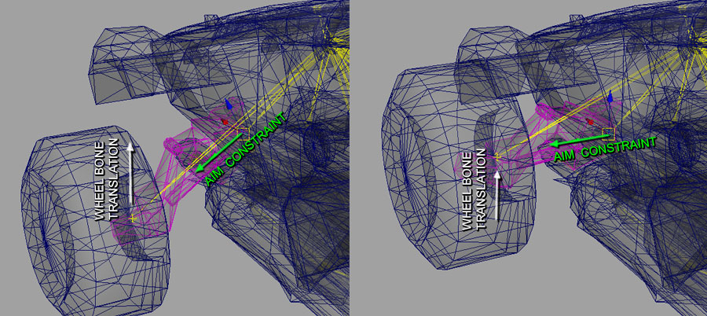
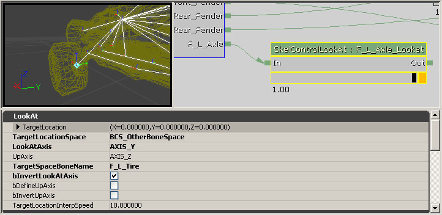
蓝色的菱形是对准目标。`TargetLocationSpace'设置决定了对准目标相对谁而言： 它本身、它的父项、actor空间、世界空间、或者或者在这种情况下，另一个骨骼。在`TargetSpaceBoneName'设置中输入您想对准的骨骼名称。`Target Location'设置将会相对它的`Target Location Space'设置平移对准目标的位置。 您也可以通过在LookAt节点后通过链接一个SkelControlSingleBone节点来偏移目标，从而来偏移悬架骨骼的旋转值。 如果在您的3D包中LookAtAxis 和UpAxis的对齐方向不同，您可以改变或反转 LookAtAxis或UpAxis。根据您的悬架的复杂性，您可以使用LookAt节点和SingleBone节点来创建位置及其它相连接的可动部分。 LookAt节点也可以用于抵偿连接到轮子部分的旋转，比如挡风板，它需要随着汽转向而旋转并随着悬架而移动，但是它不应该向前或向后旋转。 为了完成这个目的，添加一个骨骼，使它以轮子骨骼为父项，但是它们位于完全相同的位置。 把挡风板网格物体和这个骨骼想绑定。 在轮子骨骼的上面直接添加另一个骨骼。 它便是挡风板要对准的骨骼。 在动画树中，添加一个LookAt约束到挡风板骨骼，使它对准挡风板要对准的骨骼。 在LookAt节点设置中，设置LookAt Axis(朝向轴)和Up Axis(向上轴)都为Z。现在当悬架行走及转向的过程中，挡风板骨骼应该可以跟着轮子骨骼移动，但是不会旋转。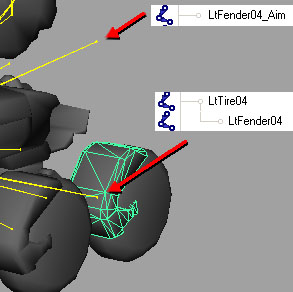
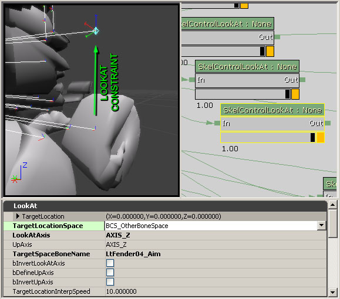
设置Damage(损坏)节点
继承于UTVehicle 类的载具可以使用本地的损坏系统。这使得载具可以在受到破坏的地方显示损坏过程。这个系统使用了顶点变形目标和专用的骨架控制器、 UTSkelControl_Damage、UTSkelControl_DamageHinge和UTSkelControl_DamageSpring节点。顶点变形节点
顶点变性目标可以用于改变载具的外观，当载具受到破坏时，可以通过从未受到损坏的网格物体向一个或多个受到损坏的网格物体混合来改变载具的外观。通常，如果您想让载具的每个部分单独地受到破坏，那么您针对载具的每个部分都需要有一个顶点变形目标，比如，类似于汽这样的载具，您需要具有针对发动机罩、每个挡板、尾部、门等的顶点变形目标。这样，当另一个载具撞入到左前方的挡板时，损坏系统可以混合到那个顶点变形目标中，使得只有那个挡板呈现出破损状态。 在 Vehicle Import and Setup(导入及设置载具部分)介绍了导入顶点变形目标相关的信息。
一旦您导入了载具的顶点变形目标，并准备好使用，就必须在动画树种设置它们。首先，必须为每个顶点变形目标创建一个MorphNodePose 。这个节点的 Morph Name 属性决定了它所控制的顶点变形目标。
在 Vehicle Import and Setup(导入及设置载具部分)介绍了导入顶点变形目标相关的信息。
一旦您导入了载具的顶点变形目标，并准备好使用，就必须在动画树种设置它们。首先，必须为每个顶点变形目标创建一个MorphNodePose 。这个节点的 Morph Name 属性决定了它所控制的顶点变形目标。
 接下来，必须添加MorphNodeWeight (顶点变形节点的权重)。这个节点控制MorphNodePose的顶点变形目标在任何时刻混合的程度。MorphNodePose应该连接到MorphNodeWeight上，MorphNodeWeight反过来连接到AnimTreenode基本节点的Morph链接上。确保使用 NodeName 属性给MorphNodeWeight提供一个名称，因为程序员在脚本中将通过这个名称进行引用。
接下来，必须添加MorphNodeWeight (顶点变形节点的权重)。这个节点控制MorphNodePose的顶点变形目标在任何时刻混合的程度。MorphNodePose应该连接到MorphNodeWeight上，MorphNodeWeight反过来连接到AnimTreenode基本节点的Morph链接上。确保使用 NodeName 属性给MorphNodeWeight提供一个名称，因为程序员在脚本中将通过这个名称进行引用。
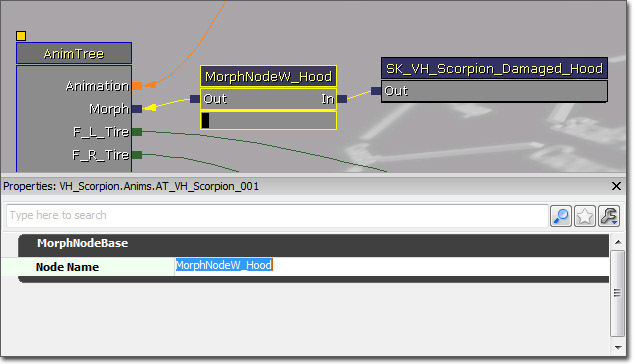
必须针对在损坏系统中使用的每个顶点变形目标执行这个过程。
Damage Nodes(损坏节点)
可以结合使用骨架控制器和损坏系统，使得当载具的某些部分受到损坏时会脱离载具，并且当载具受到损坏时会产生爆炸。基本的损坏控制器是UTSkelControl_Damage。这个节点主要用于当载具死亡时生成破损的载具部分，但是随着载具受到的损坏越来越重，它也可以使得载具断裂为碎片。UTSkelControl_DamageHinge 和UTSkelControl_DamageSpring 节点主要用于随着载具受到损坏的增大，使得载具断裂为碎片。它们也可以使得载具的相关部分在彻底断裂之前变得更加松散(根据所使用的节点类型、铰链或弹簧的不同而不同)。 这个节点连接到一个特定骨骼上，并且在那个骨骼(或者相对于其他骨骼更接近于这个骨骼)产生损坏的位置处应用相关的损坏控制器。 有很多和UTSkelControl_Damage、UTSkelControl_DamageHinge和UTSkelControl_DamageSpring节点相同的属性：
Damage(损坏)
有很多和UTSkelControl_Damage、UTSkelControl_DamageHinge和UTSkelControl_DamageSpring节点相同的属性：
Damage(损坏)
- On Damage Active(激活损坏) - 如果该项为true，那么为这个控制启用损坏和破裂功能。
- Control Str Follows Health(控制强度由生命值决定) - 如果该项为true，一旦激活控制强度由控制器的当前生命值决定。否则一旦激活后它将总是具有完全的强度。
- Damage Bone Scale(损坏骨骼比例) - 当控制器破毁时相关骨骼所设置为的比例。通常(0,0,0)意味着完全隐藏这部分。
- Damage Max(最大损坏) - 在控制器死亡之前它可以承受最大损坏量，这个值时控制器的最大生命值。
- Activation Threshold(激活阈值) - 低于该生命值比例(当前生命值/最大生命值)的控制器变为激活状态。
- Break Mesh(断开网格物体) - 当这个控制器断开时要产生的网格物体。
- Break Threshold(断裂阈值) - 当控制强度超过这个值之上时控制器看上去开始断裂。
- Break Time(断裂时间) - 从开始断裂到完全断开所花费的时间。
- Default Break Dir(默认断裂方向) - 决定断裂碎块的速度所使用的方向。
- Damage Scale(损坏比例) - 生成的载具部分所使用的比例。这对于镜像同一网格物体以便在载具的另一侧的多个部分上使用时这是有用的。
- PS_Damage On Break - 当控制器彻底断裂时所产生的粒子系统，比如小范围的爆炸效果。
- PS_Damage Trail - 附加到脱落部分上用作为尾迹的粒子系统，比如烟雾尾迹效果。
- On Death Active(死亡时激活) - 如果该项为true，那么这个控制启用死亡断裂功能。
- On Death Use For Secondary Explosion - 如果该项为true，那么这个损坏工具用于载具的次要死亡爆炸而不是用于主要死亡。
- Death Percent To Actually Spawn - 当载具死亡时它真正生成一个脱落的部分的百分比几率(0到1)。
- Death Bone Scale - 当控制器彻底断裂时设置相关骨骼所使用的比例。通常(0,0,0)意味着完全隐藏这部分。
- Death Static Mesh - 当这个控制器断裂时所生成的静态网格物体。
- Death Impulse Dir - 决定脱落块的速度所使用的方向。
- Death Scale - 生成的载具部分所使用的比例。这对于镜像同一网格物体以便在载具的另一侧的多个部分上使用时这是有用的。
- PS_Death On Break - 当控制器死亡时断裂所产生的粒子系统，比如小范围的爆炸效果。
- PS_Death Trail - 附加到脱落部分上用作为尾迹的粒子系统，比如烟雾尾迹效果。
设置插槽
前面提到的插槽可以用作为枪口火焰以及武器所需要的任何其它特效的附加点。插槽从本质上讲连接特定骨骼的定位器，您可以命名它、偏移它并让它们自己旋转。这为在特定的位置处附加或产生武器项提供了一种简单的方式。 插槽是通过动画集编辑器来添加到虚幻编辑器中的骨架网格物体上的。请按下工具条上的
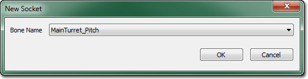
选中那个添加到枪管网格物体尖端的骨骼，然后按下 确定 。这将会弹出另一个对话框，那里您可以给插槽赋予一个名称，以便可以在代码中识别它。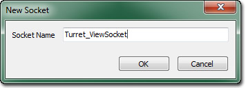
一旦您输入了名称，按下 OK 便可以添加新的插槽。它将出现在动画集编辑器的预览面板和插槽管理器的插槽列表中。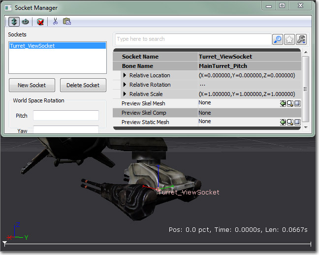
所显示的示例将用作为附加相机的定位器，以便让乘客控制炮塔。也可以在每个武器炮筒的尾部及在任何想附加特效的地方附加其他插槽。以下的示例载具已经添加了所有需要的插槽。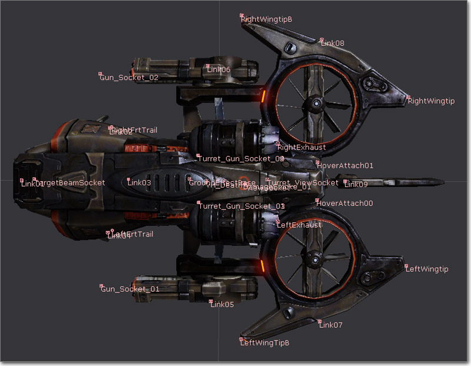
创建射弹
射弹是武器开火的物理呈现。Unreal中射弹的视觉效果组件是粒子系统。创建射弹的粒子系统是个非常简单的过程，和制作其它任何粒子系统类似。从本质上讲，您就是要创建一个您希望射弹在战斗中呈现的效果的粒子系统。这个粒子系统可由任意多个发射器做成，只要这些是获得理想的效果所需要的。 射弹粒子系统的一些示例如下所示：


创建枪口火焰
枪口火焰用于模仿射弹射出武器的炮筒的效果，就像在现实生活当枪开火时你所看到的火焰那样。Unreal中的武器系统使用粒子系统作为枪口火焰的可视化组件。和射弹一样，只要可以满足获得期望效果的需要，枪口火焰的粒子系统可以有任意多个发射器组成。 枪口火焰粒子系统的一些示例如下所示：


写给程序员
- SkeletalMesh(骨架网格物体)的名称。
- PhysicsAsset(物理资源)的名称。
- AnimTree(动画树)的名称。
- 每个轮子骨骼的名称。
- 每个SkelControlWheel(骨架控制轮子)的名称。
- 每个轮子的半径。
创建脚本文件
以下的例子，解释了您将如何为您的载具把所有需要的信息输入到UnrealScript类(.uc)文件中。
// Saved as MyVehicle.uc 保存为MyVehicle.uc
class MyVehicle extends SVehicle;
defaultproperties
{
Begin Object Name=SVehicleMesh
SkeletalMesh=SkeletalMesh'VehiclePackage.VehicleMesh'
AnimTreeTemplate=AnimTree'VehiclePackage.VehicleAnimTree'
PhysicsAsset=PhysicsAsset'VehiclePackage.VehiclePhysAsset'
End Object
Begin Object Class=SVehicleWheel Name=RRWheel
BoneName="R_R_Tire"
SkelControlName="R_R_Tire_Cont"
WheelRadius=25
End Object
Wheels(0)=RRWheel
}
性能： 调整载具
有很多参数用于控制载具如何运行。一些关于每个轮子的参数存在于每个SVehicleWheel对象中，而这些影响整个载具的属性存在于SVehicle 和 SVehicleSim对象中。关于每个参数的解释可以在载具技术指南页面获得。一些有用的控制台命令
虚幻引擎的用于调整载具的一个非常有用的功能是editactor 控制台命令。当载具在开动中时，您可以在控制台中输入 editactor class=svehicle ，这样将弹出属性窗口。当您在到处开动时，这个窗口将允许您调整几乎所有的参数，从而使迭代非常地快。